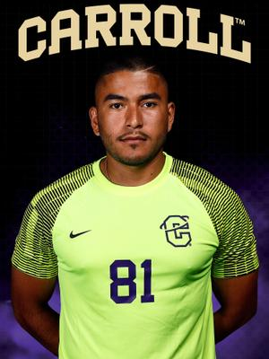
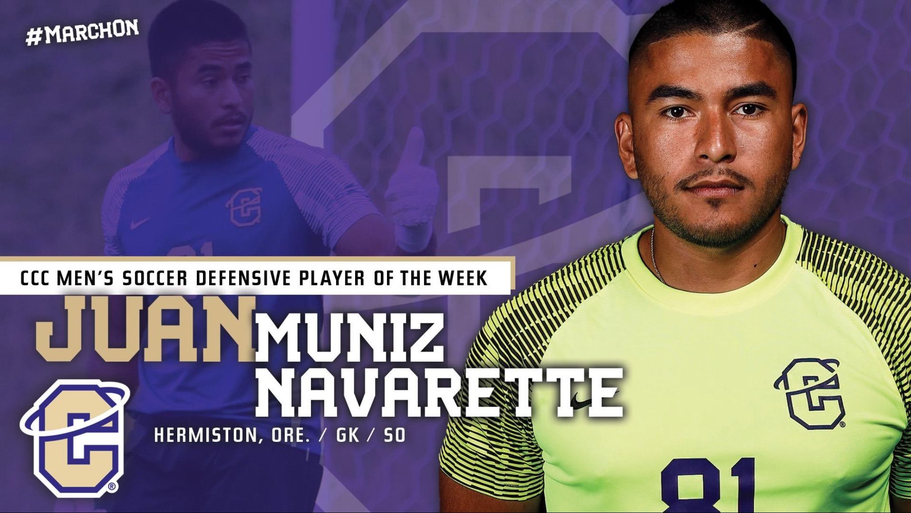
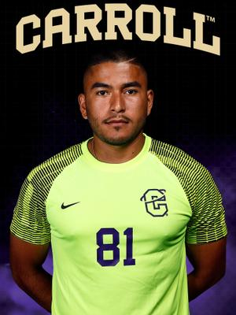
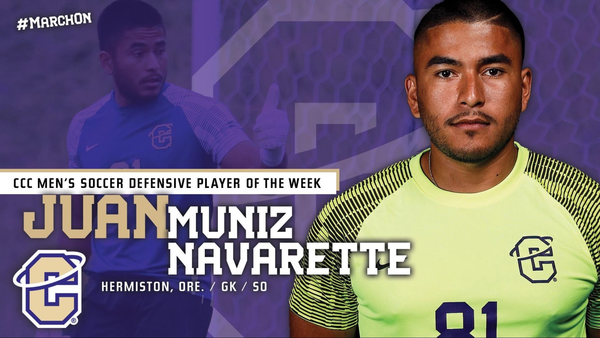

My soccer journey has been a testament to my exceptional talent and unwavering dedication to the sport. Beginning my athletic career in Mexico, I honed ymyour skills before making a significant impact at Hermiston High School. Winning the Goalkeeper of the Year in my junior year and receiving an Honorable Mention All-State title showcased my prowess. Senior year brought regional championships and a 2nd Team All-Conference recognition, solidifying my leadership and skill on the field.
Transitioning to Blue Mountain Community College, you continued to shine, contributing significantly to the team's success by securing the East Division Conference title. Your versatility was evident as you claimed the Athlete of the Week title alongside an NBA star and proved your worth with a goal and two assists.
The semi-professional level UPSL stint with ST. John's F.C. in Portland stands out as a pivotal moment. Joining mid-season, you played an instrumental role in propelling the team from the bottom of the table to unprecedented success. Going undefeated in the seven games you played, earning Player of the Game thrice, and securing both conference and PNW playoff championships highlighted your exceptional talent and contribution to the team's historic double-trophy win.
Your journey continued at Carroll College, where you became the starting goalkeeper and significantly influenced the team's impressive 8-3-4 record when you were on the field. Notably, you received recognition as Athlete of the Week and were selected for the Second Team All-CCC, further validating your consistent excellence.
Your soccer career has been defined by triumphs, leadership, and a relentless pursuit of excellence. Each chapter has showcased your talent, determination, and ability to elevate teams to new heights, setting the stage for an even brighter future in the professional realm of the sport.

 


